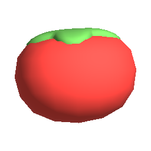
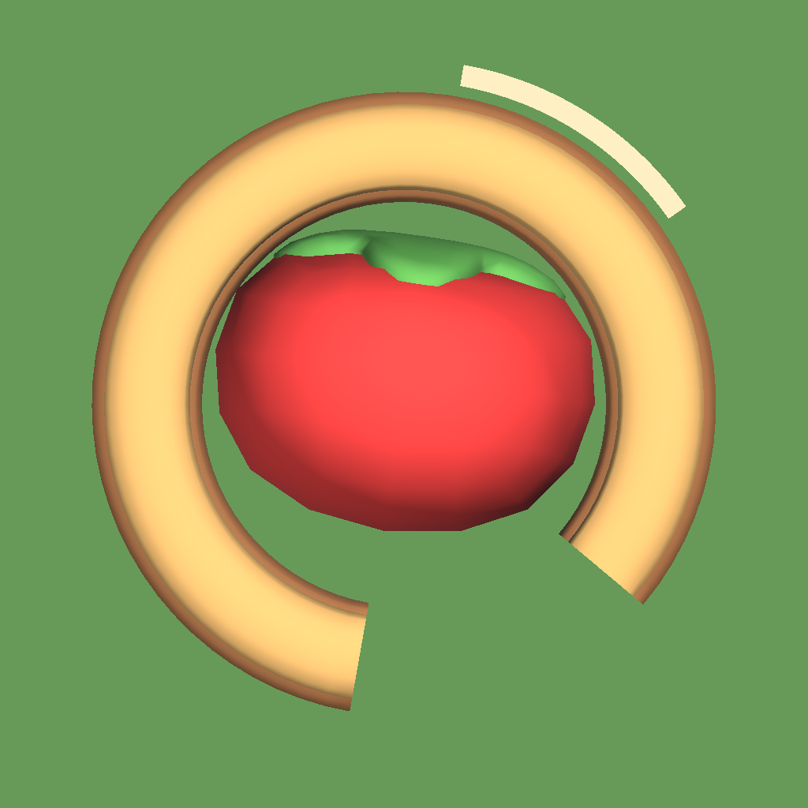
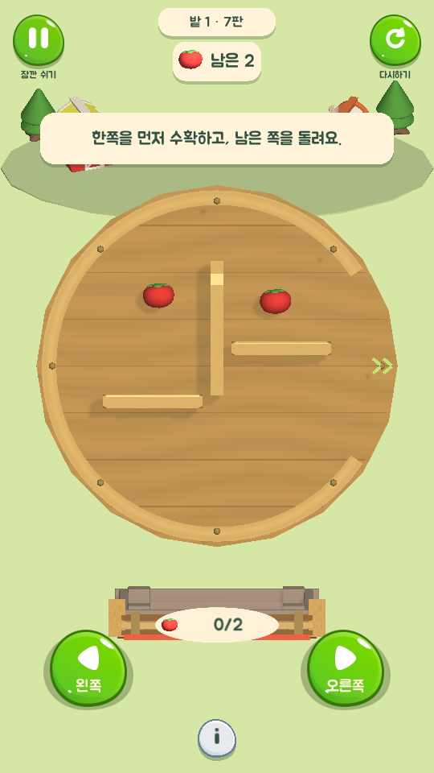
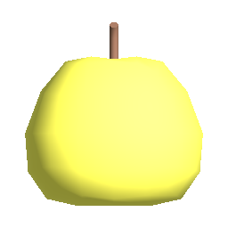
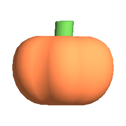

토마토는 데굴데굴
출구를 찾고 방향을 바꾸며, 회전의 감각을 익혀요.

Spin Harvest빙글빙글 수확 농장작은 농장에 찾아온, 새로운 퍼즐
길을 돌리고 과일을 굴려 보세요.
토마토는 차곡차곡, 사과는 알맞은 바구니로.
큰 호박은 길을 바꾸는 열쇠가 돼요.
설치 없이 브라우저에서 · 무료 플레이 · 광고 포함

손끝으로 시작하는 첫 수확
미로 가장자리를 손가락으로 잡고, 원을 따라 돌려 보세요. 출구를 바구니 위로 향하게 하고 손을 떼면 과일이 굴러가요.
화면 아래 좌우 버튼도 사용할 수 있어요. 컴퓨터에서는 원형 마우스 드래그와 A D, 방향키로 조작할 수 있어요.
첫 판에서 짧게 알려드려요. 1번 밭 5판에는 토마토 20개가 쏟아지는 대풍작이 기다려요. 18개만 담아도 성공!
같은 회전, 다른 해법

출구를 찾고 방향을 바꾸며, 회전의 감각을 익혀요.

색과 모양을 보고 골라 담아요. 무엇을 먼저 보낼까요?

큰 몸으로 틈을 막고 문을 열어요. 다른 과일이 갈 길을 만들어 주세요.
한 밭씩, 천천히
한 판을 수확하면 다음 판이 열려요.
별과 진행 상황은 플레이한 브라우저에 저장돼요.
세로 화면으로 플레이하면 더 편해요.